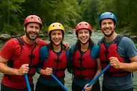
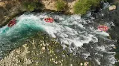

Our Mission
To create safe, thrilling, and environmentally responsible white-water experiences that connect people with rivers and wild places.

To create safe, thrilling, and environmentally responsible white-water experiences that connect people with rivers and wild places.
Founded in 2010 by local river guides, Beria Kuku Rafting has grown into a trusted leader in safe, adventurous, and environmentally responsible rafting experiences. Our team is made up of certified guides with deep knowledge of Kenya’s stunning river systems.
What started as a small passion project has evolved into a full-service operation offering trips for families, schools, corporate teams, and thrill-seekers from around the world. We continue to focus on conservation, education, and unforgettable river memories.